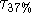
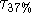

Spectral Analysis: The above results demonstrate that the magnitude of stride-to-stride variability decreases with maturation in healthy children. The question we next address is whether the temporal structure of the stride time dynamics is also age-dependent. Figure 4 shows the results of spectral analysis for the time series shown in Figure 1. As expected, there appears to be a change in the frequency spectra with age. The power in the higher frequency ranges appears to be slightly larger in the oldest child and smaller in the two younger children. Conversely, low frequency power appears to be reduced in the 11 year old child compared to the two younger children. For the entire group in general, the percent of high frequency power was increased and low frequency power was decreased in the oldest children compared to the other two groups (Table 3). Although these trends were not significant, there was a significant dependence of the low/high ratio on age group (p < .002). This spectral ratio was significantly larger in the oldest children compared to the 6 and 7 years olds (p < .02) and it also tended to be larger in the 6 and 7 year olds compared with the youngest children (p=.06). In other words, the ratio of the stride time fluctuations on relatively large time scales to the fluctuations on shorter time scales decreased with age.
To confirm that this difference in spectral balance was not due to any
simple large-scale trends in the data, we performed spectral analysis of each
time series after detrending each time series (by taking the first
difference). The results were similar to those for the original time
series (Table 3), suggesting that there is a change in spectral
balance independent of large-scale trends in the data. Moreover,
we confirmed that this effect persisted even if we changed (somewhat
arbitrarily) the way in which the spectra were divided. For example, when the high
frequency band was re-defined as 0.3 to 0.4 stride and the low frequency band as
0.1 to 0.2 stride
and the low frequency band as
0.1 to 0.2 stride , a similar effect of age on the balance of
spectral power was observed (Table 3 and Figure 5).
, a similar effect of age on the balance of
spectral power was observed (Table 3 and Figure 5).
Autocorrelation Measures: As expected, measures of the decay of the autocorrelation function also varied with age. For the younger
children, decayed rapidly (after 2 or 3 strides), while
this decay time was generally larger in the two older groups. Specifically,
was 2.5  0.2 and 4.8
0.2 and 4.8  0.6 strides in the 3 and
4 year olds and the 6 and 7 year olds, respectively, (p < .0005).
was slightly, but not significantly larger in the 11 to 14 year olds
(5.6
0.6 strides in the 3 and
4 year olds and the 6 and 7 year olds, respectively, (p < .0005).
was slightly, but not significantly larger in the 11 to 14 year olds
(5.6  1.1 strides) compared to the 6 and 7 year olds. Similar
results were obtained for . This measure of the decay of the
autocorrelation function was also lowest in the 3 and 4 year olds (5.8
1.1 strides) compared to the 6 and 7 year olds. Similar
results were obtained for . This measure of the decay of the
autocorrelation function was also lowest in the 3 and 4 year olds (5.8
 1.0 strides), larger (p < .06) in the 6 and 7 year olds (11.4
1.0 strides), larger (p < .06) in the 6 and 7 year olds (11.4
 3.3), and tended to be slightly larger in the 11 to 14 year
olds (19.0
3.3), and tended to be slightly larger in the 11 to 14 year
olds (19.0 9.8; p < .01 compared to the youngest children).
9.8; p < .01 compared to the youngest children).
Stride Time Correlations: The fractal scaling index, ,
was similar in the two youngest age groups and tended to decrease in the
oldest children ( = 0.93  0.04, 0.93
0.04, 0.93  0.03, 0.88
0.03, 0.88  0.04, in the 3 and 4 years olds, 6 and 7 year olds, and 11 to 14 year olds,
respectively.)
When this analysis was performed on the first
difference of the time series (i.e., after removing any large trends),
the effect of age became more pronounced and statistically
significant (p < 0.01 and p < 0.05 comparing the 11 to 14 year olds to
the 6 and 7 year olds and the 3 and 4 years olds, respectively).
0.04, in the 3 and 4 years olds, 6 and 7 year olds, and 11 to 14 year olds,
respectively.)
When this analysis was performed on the first
difference of the time series (i.e., after removing any large trends),
the effect of age became more pronounced and statistically
significant (p < 0.01 and p < 0.05 comparing the 11 to 14 year olds to
the 6 and 7 year olds and the 3 and 4 years olds, respectively).
The DFA method automatically ``detrends'' the data by determining the fluctuations about the least-squares, best fit straight line in each window of observation. Nonstationarities (trends) that are not well characterized by a straight line could possibly give rise to an inaccurate scaling exponent. Therefore, to further examine the dynamical properties, we also computed the scaling index using higher order DFA detrending. Specifically, we detrended each window of box size n using 2nd order polynomials instead of the 1st order, linear detrending (12).
With 2nd order detrending of the time series, the age effect was apparent both before (see Figure 6) and after taking the first difference of the time series. Among the younger subjects (< 11 years old), ten subjects (about 25%) had scaling indices greater than 1.0, while in the oldest subjects all of the scaling exponents were less than 1.0. While the scaling properties were similar in the 3 and 4 year olds and the 6 and 7 year olds, was significantly lower in the oldest children compared to the 6 and 7 year olds and compared to the 3 and 4 year olds (p < .05). The mean of the oldest children comes closest to the mean value obtained in young adults (Figure 6).